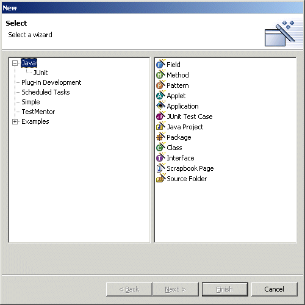
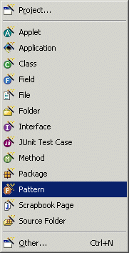
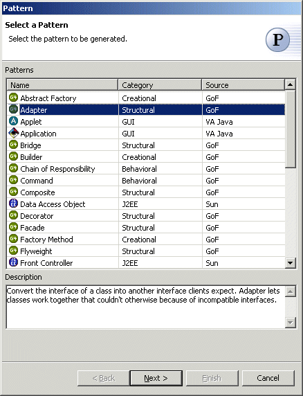

Java Pattern Wizard
Each pattern describes a problem which occurs over and over again in our environment, and then describes the core of the solution to that problem in such a way that you can use this solution a million times over, without ever doing it the same way twice.
-- Christopher Alexander
Software design patterns are similar in nature to the architectural design patterns described by Christopher Alexander. They describe a common software design problem and a solution that can be repeatedly applied. The solution is usually general enough that there are several ways of implementing it.
Unlike architectural design patterns, however, software design patterns are usually implemented in one of a small number of ways over and over. This kind of consistency helps to simplify the software maintenance task by making it easier for the maintainers to understand when and how various patterns were applied to the problem. It also makes it possible for us to provide support for patterns within the development environment.
Patterns can be applied via the standard New wizard by selecting the "Java"
category, or via the popup "New" menu or the  icon on the main toolbar.
icon on the main toolbar.
 
The Java Pattern Wizard allows you to generate classes implementing various design patterns and other general Java coding patterns. All of the available patterns are listed and can be sorted by name, by category or by source. Patterns with "GoF" listed as their source are the standard design patterns described in the "Gang of Four" Design Patterns book.

A pattern may have one or more implementation strategies. If a pattern has only one implementation strategy, clicking the "Next" button will take you directly to the appropriate pattern wizard. If the pattern has more than one strategy, clicking the "Next" button will take you to a strategy selection page.
The Java Pattern Wizard supports the following design patterns and general patterns.
Creational Patterns
Abstract Factory
Implement Interface
Type Safe Enumeration
Behavioral Patterns
Structural Patterns
GUI Patterns
J2EE Patterns
Data Access Object
Servlet (Eclipse only)
Testing Patterns
Options are provided via a preference page to control various code generation options such as the body content of stub methods, code formatting options, the copyright string and whether metadata is generated.
Adding New Patterns
Patterns are defined via an XML-based pattern language provided with CodePro. New or customized patterns may be easily added by a patterns extension point defined by Codepro. See:
<CODEPRO>\eclipse\plugins\com.instantiations.assist.eclipse.pattern.ui_X.X.X\plugin.xml
You can see lots of example of its use here:
<CODEPRO>\eclipse\plugins\com.instantiations.assist.eclipse.pattern_X.X.X\strategy